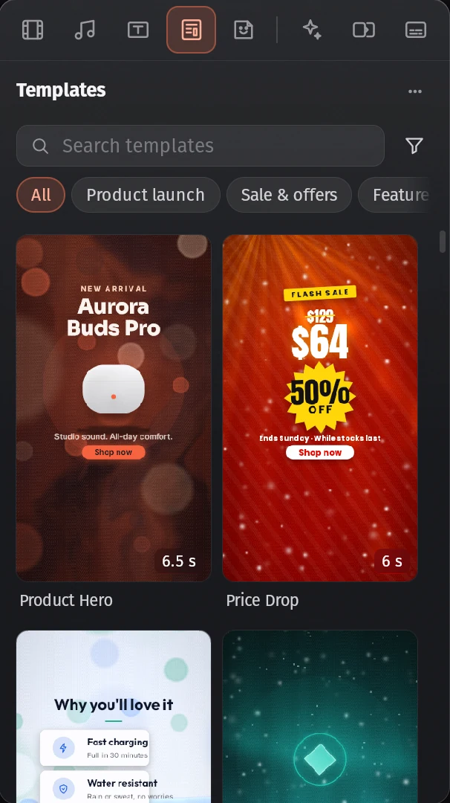
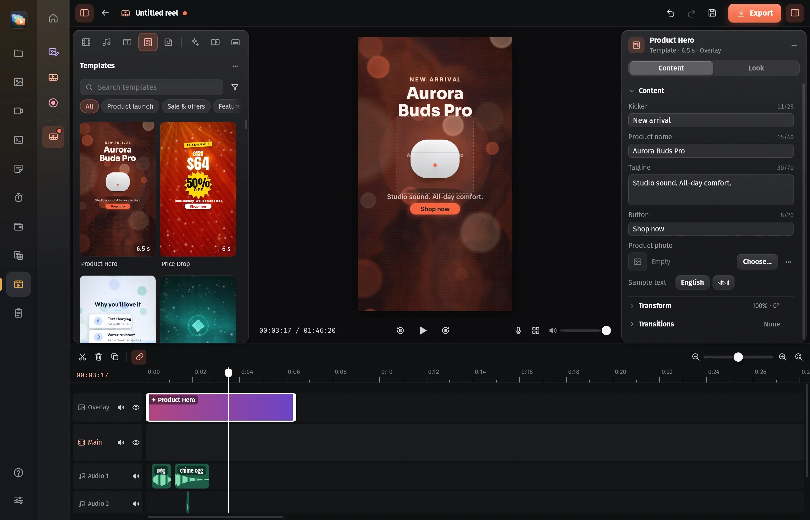

Studio
A video editor for reels and videos, with text, music, stickers, captions, keyframes and effects, and a layered photo editor with masks, selections, brushes, filters, AI tools and RAW.

Zazabor brings a file manager, photo gallery, video player, a photo and video studio, office apps, notes, time tracking and a wallet together in one fast, native app for Linux.

Everything in one place
Each part of Zazabor is a full app of its own. Together they share one look, one search, one set of shortcuts and one lock.
A video editor for reels and videos, with text, music, stickers, captions, keyframes and effects, and a layered photo editor with masks, selections, brushes, filters, AI tools and RAW.

Docs, Sheets and PDF that open and save Word, Excel and PDF files. Fill, sign, redact, OCR and convert PDFs.
Your photos, found on their own and shown as albums, with a deep-zoom viewer and cinematic slideshows set to music.
Plays almost anything, with a library, subtitles, streams and floating glass controls.
Browse, preview, search, compress and connect to servers. Code opens in a proper editor.
Sticky notes on your desktop with Markdown, a Kanban board, undo, and sync through any cloud folder.
Check in for the day, time tasks and breaks, and write the day's report.
Accounts and mobile wallets, budgets, bills and reports. Upload a bank statement and it fills itself in.
Everything you copy, to paste again, plus emoji. And your shell in glass tabs with split panes.
Motion templates
Pick a scene, type your words, drop in your pictures and logo. Every template fits 9:16, 1:1, 4:5 and 16:9, takes your Brand Kit's colours and fonts, and speaks Bangla too.
The library grows without app updates. New templates reach Zazabor within the hour.
Soundtracks
Zazabor's own soundtracks know their tempo, so slideshows and reels cut in time. Listen right here.
Always current, always yours
Zazabor ships with a starter set. Templates, soundtracks and fonts download the first time you use them, then work offline.
Zazabor tells you when a new version is out. Every release and library file is signed and checked before it's used.
Your photos, notes and money live on your computer, with no account. Lock it all with a password.
Download
For Linux on x86-64 (Ubuntu, Pop!_OS, Debian, Fedora and friends). It installs for you, no root needed, and adds Zazabor to your applications menu.
curl -fsSL https://soab42.github.io/zazabor-content/install.sh | sh
Needs WebKitGTK 4.1, GStreamer and VLC's libraries. On Ubuntu, Pop!_OS or Debian: sudo apt install libwebkit2gtk-4.1-0 gstreamer1.0-plugins-good gstreamer1.0-libav vlc
Questions
No. Download it and use every part of it; there's no account and no subscription.
Yes. Everything runs on your computer. The internet is only used to download templates, soundtracks and fonts the first time you use them, and to check for updates, which you can turn off.
Zazabor checks GitHub now and then and tells you when a new version is out. In Settings → Zazabor → Updates, press Install Update, then Restart Now. Each release is signed, and Zazabor checks the signature before installing.
Yes. Docs opens and saves .docx, Sheets opens and saves .xlsx, .csv and .tsv with 489 functions, and the PDF app reads, fills, signs, redacts, OCRs and converts PDFs.
Linux on x86-64 today, on any desktop with WebKitGTK 4.1, GStreamer and VLC's libraries: Ubuntu, Pop!_OS, Debian, Fedora and the like.
On GitHub: report a bug or request a feature. In Zazabor, Settings → Zazabor → Feedback opens the same forms with your version and system filled in.
Delete ~/.local/bin/zazabor, ~/.local/lib/Zazabor and ~/.local/share/applications/zazabor.desktop. Your settings stay in ~/.config/dev.soab.zazabor until you delete that folder too.